Skills, Projects, and Background
Showcase and Visualizations
This project incldues the exploration of the leading indicators of heart disease. Using Python and scikit-learn, I examine each of the variables and develop a model to predict them. This example shows how to use Machine Learning to predict an outcome or disease to improve care, provide tailored care, and anticipate client needs.
Here we see the distribution for those with and without heart disease: 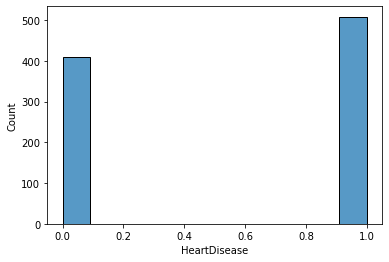
I first begin by exploring the data and filtering. Then I examine the model to determine the best predictors. The data starts off with these variables:
Age, Sex, ChestPainType, RestingBP, Cholesterol, FastingBS, RestingECG, MaxHR, ExerciseAngina, Oldpeak, ST_Slope
Next we see the distribution of each variable:
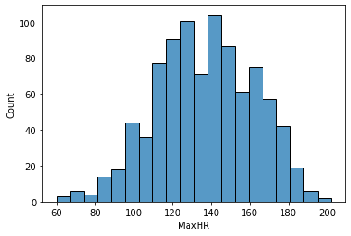
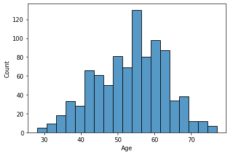
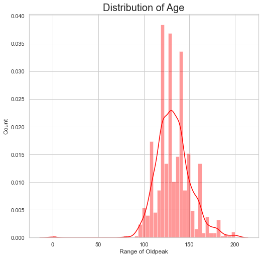
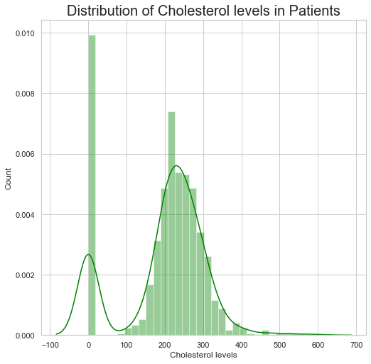
Finally, we can see the correlation between them and if there are any variables in the data too correlated that we need to look out for in this heatmap:
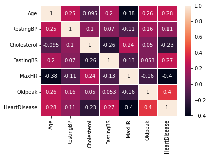
We can see some problems with 0 values in cholesterol and other issues with the data. Removing cholesterol altogether leads to a worse model than without so in this case I will simply remove the rows with the missing values instead. The numberic variables have wide ranges so I scale those using a standard scalar and transform the categorical variables to prepare them for training.
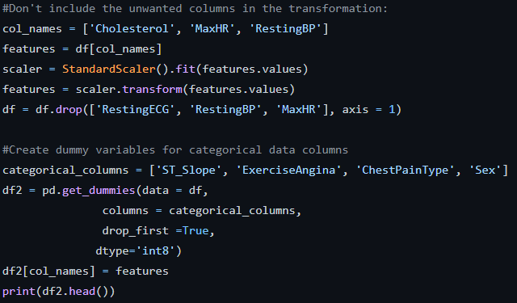
With the variables I selected, we can see the results:
Accuracy: 0.8666666666666667
Precision: 0.8356164383561644
Recall: 0.8840579710144928
We used Logistics regression in this example but there are many more effective machine learning models that we can use to improve upon the result. Click here to access the python notebook.
Neural networks have become increasingly popular as hardware becomes advanced enough to utilize them and as advances in research have led to better models and libraries. AI is an extremely useful tool to analyze and classify data. This example seeks to determine how to classifly heartbeats using clinical data and classify them. The results of this analysis can be used by clinicians to quickly identify and treat individuals faster and provide better care and quality results while reducing potential mistakes by treatment providers.
This data set is available by MIT. This is a multiclass classification model to determine if heartbeats are normal or contain abnormalities.The dataset contains measurements with 80 time steps for each row and each time step has one measurement.
They are labeled from T1 to T80 and classified in the following categories:
0 = Normal
1 = Supraventricular premature beat
2 = Premature ventricular contraction
3 = Fusion of ventricular and normal beat
4 = Unclassifiable beat
In this example I use a variety of neural network models to find which produces the best accuracy. I first start with loading and exploring the dataset.
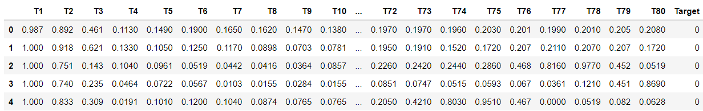
Since the dataset does not need any transformation or cleaning I can immediately split into training. Next, I reshape the data for keras input and find the baseline accuracy.
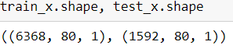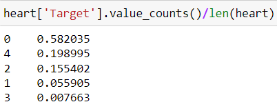
Now we can create our models. We initialize a sequential deep model and define our parameters ensuring that the final layer is equal to the number of classes that we have.
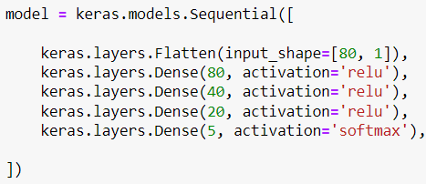
I continue this with 2 LSTM models and a deep GRU model to get the following results:
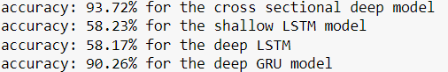
Each type of neural network is useful for different tasks. For this set Recurrent Neural Networks (RNN) and deep networks are more suited for sequential data, leading to its much greater accuracy. We could also change hyperparameters and use other models to see how they affect results. Grid search is a powerful tool for finding the best combination. For now, our accuracy is far higher than baseline and could still be improved.
You can access the Jupyter notebook with comments here.

In this project I use SAS to analyze and predict used car prices. Using various methods and data sources, I seek to project prices with publicly available data using regression. This shows how we can determine the influence various predictors have on a target variable, in this case price. We can then use this information to make better pricing decisions and anticipate the affect on demand.
Using publicly available data, I use SAS to conduct linear regression on a dataset of cars sold in the US.
The data includes parameters such as make, model, year, mileage, location, and features of over 30,000 vehicles.
After exploring the data, I omit any observations with null values and check for skewness along with other abnormalities.
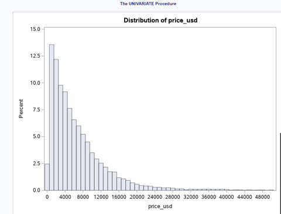
Here we also see the differences in vehicle type.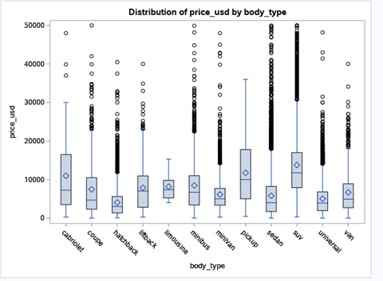As expected, price is right skewed, and the most expensive vehicles tend to be SUVs and trucks, leading to most manufacturers focused on selling these types. Since the price is significantly skewed, log transformation remedies this issue. Based on the output, we also find insight that electric vehicles have higher selling pounts. With inflation high, the average new vehicles are selling at just over $47,000.
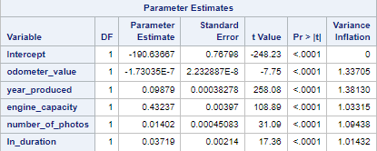
You can view the SAS code here
Recent News